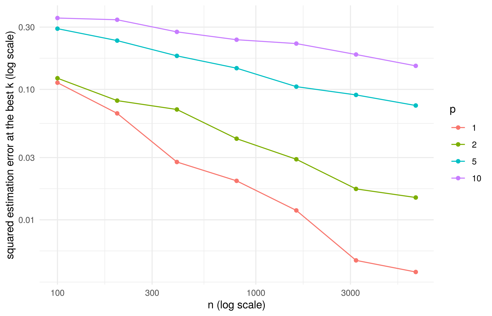

library(tidyverse) # should've already install.packages("tidyverse")
library(glmnet) # might need to install.packages("glmnet")
library(mgcv) # penalized splines; ships with R
theme_set(theme_minimal())
mse <- function(y, pred) mean((y - pred)^2)
se_loss <- function(y, pred) sd((y - pred)^2) / sqrt(length(y)) # standard error of an MSE
# k-NN regression with several standardized inputs, as in the lecture: squared distances by
# matrix algebra, then the mean outcome of the k nearest training rows.
knn_predict <- function(Xnew, Xtrain, ytrain, k) {
d2 <- outer(rowSums(Xnew^2), rowSums(Xtrain^2), "+") - 2 * Xnew %*% t(Xtrain)
apply(d2, 1, function(d) mean(ytrain[order(d)[1:k]]))
}Week 7 seminar
Note
This is the student version of the notebook. The code you write goes where a line says # ... or has a ____. A code chunk with a blank starts with #| eval: false, so the file renders as it stands; delete that line once you have filled the blank. Working through the chunks one at a time in RStudio (Ctrl/Cmd+Enter) is unaffected. Answers are revealed in the seminar.
Before the seminar
The lecture stated the bias–variance decomposition in ridge form and left its proof to you (exercise 1). It proved the \(k\)-nearest-neighbor rate from a stated lemma; exercise 2 is that proof again, with the slides closed. Do both on paper before the seminar; the seminar’s problems are variations on them. You may use, without proof: linearity of expectation; that the variance of a sum of independent variables is the sum of their variances; that for a symmetric matrix \(\mathbf A\) the gradient of \(\beta^T\mathbf A\beta\) is \(2\mathbf A\beta\) and its Hessian is \(2\mathbf A\); and the tower property, \(\mathbb E[W] = \mathbb E\big[\mathbb E[W \mid V]\big]\). Throughout, assume that every expectation that appears exists.
WarningHints
Each exercise has hints, collapsed below it. Do not open a hint unless you have been stuck for at least a few minutes, and open them in order. Solutions are shown in the seminar if you ask.
Exercise 1 (bias–variance decomposition, ridge form). \(\mathbf X\) is \(n \times p\) with orthonormal columns, \(\mathbf X^T\mathbf X = \mathbf I\) (so \(p \le n\); the lecture’s identity design is the case \(\mathbf X = \mathbf I\), \(n = p\)). The outcome is \(\mathbf y = \mathbf X\beta + \boldsymbol\varepsilon\) with \(\beta\) fixed and unknown and the \(\varepsilon_i\) independent, mean \(0\), variance \(\sigma^2 > 0\). Expectations are over \(\boldsymbol\varepsilon\), with \(\mathbf X\) fixed. The least-squares estimator solves the normal equations \(\mathbf X^T\mathbf X\beta = \mathbf X^T\mathbf y\), so here \(\hat\beta = \mathbf X^T\mathbf y\). For \(\lambda > 0\) the ridge estimator \(\hat\beta_\lambda\) minimizes \(\|\mathbf y - \mathbf X\beta\|^2 + \lambda\|\beta\|^2\).
Show that \(\hat\beta\) is unbiased, \(\mathbb E[\hat\beta] = \beta\), and that each coordinate has variance \(\mathrm{Var}(\hat\beta_j) = \sigma^2\). Deduce \(\mathbb E\|\hat\beta - \beta\|^2 = p\sigma^2\).
Derive the stationarity condition of the ridge objective, \((\mathbf X^T\mathbf X + \lambda\mathbf I)\beta = \mathbf X^T\mathbf y\), and show that in this design \(\hat\beta_\lambda = \hat\beta/(1 + \lambda)\).
Compute the bias \(\mathbb E[\hat\beta_{\lambda,j}] - \beta_j\) and the variance \(\mathrm{Var}(\hat\beta_{\lambda,j})\) of each coordinate, and show \[ \mathrm{MSE}(\lambda) = \mathbb E\|\hat\beta_\lambda - \beta\|^2 = \sum_{j=1}^p \frac{\lambda^2\beta_j^2 + \sigma^2}{(1 + \lambda)^2}. \]
Differentiate \(\mathrm{MSE}(\lambda)\) and show that its derivative at \(\lambda = 0\) is \(-2p\sigma^2\), whatever \(\beta\) is. Conclude that for every \(\beta\) there is a \(\lambda > 0\) with \(\mathrm{MSE}(\lambda) < \mathrm{MSE}(0) = p\sigma^2\).
For \(\beta \ne \mathbf 0\), find the \(\lambda\) that minimizes \(\mathrm{MSE}(\lambda)\), in terms of \(\sigma^2\) and \(\|\beta\|^2/p\), and the minimum value. What happens when \(\beta = \mathbf 0\)? Why can this \(\lambda\) not be used in practice?
NoteHint 1
- \(\hat\beta = \mathbf X^T(\mathbf X\beta + \boldsymbol\varepsilon) = \beta + \mathbf X^T\boldsymbol\varepsilon\). What are the mean vector and the covariance matrix of \(\mathbf X^T\boldsymbol\varepsilon\)? The covariance matrix of \(\mathbf A\boldsymbol\varepsilon\) is \(\mathbf A\,\mathrm{Cov}(\boldsymbol\varepsilon)\,\mathbf A^T\).
NoteHint 2
(b), (c) With \(\mathbf X^T\mathbf X = \mathbf I\) the stationarity condition reads \((1 + \lambda)\beta = \mathbf X^T\mathbf y\). For a constant \(c\), the estimator \(c\hat\beta_j\) has bias \((c - 1)\beta_j\) and variance \(c^2\sigma^2\).
NoteHint 3
(d), (e) Write \(\mathrm{MSE}(\lambda) = (\lambda^2\|\beta\|^2 + p\sigma^2)/(1 + \lambda)^2\) and use the quotient rule; after cancelling a factor \((1 + \lambda)\) the numerator of the derivative is \(2\lambda\|\beta\|^2 - 2p\sigma^2\).
Exercise 2 (the \(k\)-nearest-neighbor rate, with the slides closed). Inputs \(x_1, \ldots, x_n\) i.i.d. uniform on \([0, 1]^p\); outcomes \(y_i = f^\star(x_i) + \varepsilon_i\) with the \(\varepsilon_i\) independent of each other and of the inputs, mean \(0\), variance \(\sigma^2\); \(f^\star\) is \(L\)-Lipschitz, \(|f^\star(x) - f^\star(x')| \le L\|x - x'\|\), with \(L > 0\) and \(\sigma^2 > 0\). For a point \(x_0\), \(r_k(x_0)\) is the distance from \(x_0\) to its \(k\)th nearest input, \(x_{(1)}, \ldots, x_{(k)}\) are the \(k\) nearest inputs, and \(\hat f_k(x_0) = \tfrac1k\sum_{l=1}^k y_{(l)}\) is the mean of their outcomes. You may use the lemma stated in the lecture: for \(x_0\) away from the boundary, \(\mathbb E[r_k(x_0)^2] \le C_p (k/n)^{2/p}\), with \(C_p\) depending on \(p\) only.
Conditional on the inputs, write \(\hat f_k(x_0) - f^\star(x_0)\) as the sum of a term that depends only on \(f^\star\) and the inputs and a term that depends on the noise. Show that the first term is at most \(L\,r_k(x_0)\) in absolute value.
Show that, conditional on the inputs, the noise term has mean \(0\) and variance \(\sigma^2/k\).
Deduce \(\mathbb E\big[(\hat f_k(x_0) - f^\star(x_0))^2 \mid \text{inputs}\big] \le L^2 r_k(x_0)^2 + \sigma^2/k\), then take the expectation over the inputs and apply the lemma.
Treat \(k\) as a continuous variable and minimize the bound \(C_p L^2 (k/n)^{2/p} + \sigma^2/k\) over \(k\). Show that the minimizer is \(k = c\,n^{2/(p+2)}\) for a constant \(c\) that depends on \(p\), \(L\), \(\sigma^2\) and \(C_p\) but not on \(n\), and that the minimized bound is proportional to \(n^{-2/(p+2)}\).
By what factor must \(n\) grow to halve the bound when \(p = 10\)? When \(p = 1\)?
NoteHint 1
- \(\hat f_k(x_0) - f^\star(x_0) = \tfrac1k\sum_l \big(f^\star(x_{(l)}) - f^\star(x_0)\big) + \tfrac1k\sum_l \varepsilon_{(l)}\). Every one of the \(k\) nearest inputs is within \(r_k(x_0)\) of \(x_0\).
NoteHint 2
(b), (c) Given the inputs, which \(k\) noise terms are averaged is fixed, and they are independent with variance \(\sigma^2\). For (c), expand \((a + b)^2\) with \(a\) the first term and \(b\) the noise term; what is the conditional mean of the cross term?
NoteHint 3
- Write the bound as \(A k^{2/p} + B/k\) with \(A = C_p L^2 n^{-2/p}\) and \(B = \sigma^2\). The derivative is zero when \((2A/p)\,k^{2/p - 1} = B/k^2\), that is, \(k^{(p+2)/p} = pB/(2A)\).
Problems
Problem 1 (soft thresholding). One coordinate of an orthonormal design: \(z\) is the least-squares coefficient, a number, and \(b\) the estimate. The lasso’s one-coordinate objective is \(\tfrac12(z - b)^2 + \lambda|b|\) with \(\lambda > 0\).
Show that the minimizer is \(\hat b = \mathrm{sign}(z)\,(|z| - \lambda)_+\): \(z\) moved toward zero by \(\lambda\), stopping at zero.
The lecture writes the lasso objective as \(\|\mathbf y - \mathbf X\beta\|^2 + \lambda\|\beta\|_1\), without the \(\tfrac12\). In the orthonormal design, by how much does that lasso move each coefficient toward zero?
Problem 2 (the distance lemma in one dimension). \(n\) inputs i.i.d. uniform on \([0, 1]\), the point \(x_0 = \tfrac12\), and \(r_1\) the distance from \(x_0\) to the nearest input.
For \(0 \le r \le \tfrac12\), show that \(\mathbb P(r_1 > r) = (1 - 2r)^n\).
Compute \(\mathbb E[r_1]\). You may use \(\mathbb E[W] = \int_0^\infty \mathbb P(W > w)\,dw\) for \(W \ge 0\).
Compute \(\mathbb E[r_1^2]\) (use \(\mathbb E[W^2] = \int_0^\infty 2w\,\mathbb P(W > w)\,dw\)) and compare it with the lemma’s \((k/n)^{2/p}\) at \(k = 1\), \(p = 1\).
Let \(N(r)\) be the number of inputs within distance \(r\) of \(x_0\). What is its distribution? The distance \(r_k\) to the \(k\)th nearest input satisfies \(r_k > r\) exactly when \(N(r) < k\). Without computing, explain why \(r_k\) is about \(k/(2n)\) when \(k\) is much smaller than \(n\).
In \(p\) dimensions a ball of radius \(r\) has volume \(c_p r^p\). Repeat the argument of (d) to find the order of \(r_k\), and hence of \(r_k^2\), in \(p\) dimensions. Why does the lemma say “away from the boundary”?
Problem 3 (the smoothing penalty as weighted ridge). A one-input curve written in a spline basis, \(f(x) = \sum_{j=1}^J \beta_j b_j(x)\): the \(b_j\) are twice differentiable and their span contains the constant and the linear functions. \(\lambda \ge 0\). \(\mathbf B\) is the \(n \times J\) matrix with \(B_{ij} = b_j(x_i)\), and \(\boldsymbol\Omega\) the \(J \times J\) matrix with \(\Omega_{jk} = \int b_j''(x)\,b_k''(x)\,dx\). The smoothing objective is \(\sum_{i=1}^n (y_i - f(x_i))^2 + \lambda\int f''(x)^2\,dx\).
Show that \(\int f''(x)^2\,dx = \beta^T\boldsymbol\Omega\beta\), so the objective is \(\|\mathbf y - \mathbf B\beta\|^2 + \lambda\beta^T\boldsymbol\Omega\beta\). Show that \(\boldsymbol\Omega\) is symmetric and positive semidefinite.
Show that the minimizer satisfies \((\mathbf B^T\mathbf B + \lambda\boldsymbol\Omega)\beta = \mathbf B^T\mathbf y\), and that \(\mathbf B^T\mathbf B + \lambda\boldsymbol\Omega\) is invertible when \(\mathbf B\) has full column rank.
Suppose \(\mathbf B\) has full column rank and the basis has been chosen so that \(\mathbf B^T\mathbf B = \mathbf I\) and \(\boldsymbol\Omega = \mathrm{diag}(w_1, \ldots, w_J)\) with every \(w_j \ge 0\) (such a basis exists; the lecture’s figure showed four of its functions, ordered by wiggliness). With \(\mathbf z = \mathbf B^T\mathbf y\), show that \(\hat\beta_j = z_j/(1 + \lambda w_j)\).
Which basis functions have \(w_j = 0\)? What happens to their coefficients as \(\lambda \to \infty\), and to the others? What does the fit tend to?
Coding
1. The cross-validation pipeline
The structures seminar’s task: predict a track’s popularity from ten audio features and its release year, squared loss (data note), genre left out. The same split as there: 5,000 training, 2,000 tuning and 3,000 test tracks, one seed. Today the tuning tracks are a check on cross-validation and the test tracks are not opened; the last step uses a split by year of the 7,000 development tracks instead of the random one.
feat <- c("danceability", "energy", "loudness", "speechiness", "acousticness",
"instrumentalness", "liveness", "valence", "tempo", "duration_min", "release_year")
sp_file <- read_csv("https://ml4ds.com/files/spotify_tracks.csv", show_col_types = FALSE) |>
distinct(track_id, .keep_all = TRUE) |> # one row per track
mutate(duration_min = duration_ms / 60000)
sp <- sp_file |> select(track_popularity, all_of(feat)) # the outcome and the eleven inputs
set.seed(310) # change this number: a different split, and different numbers below
id <- sample(nrow(sp))
sp_train <- sp[id[1:5000], ]
sp_tune <- sp[id[5001:7000], ]
sp_test <- sp[id[7001:10000], ]
y_train <- sp_train$track_popularity
y_tune <- sp_tune$track_popularity
K <- 10 # folds, for the whole seminarStep 1. One function for every pipeline. cv_mse(fit_predict, d, fold) takes a function fit_predict(tr, ho) that fits on the rows tr and returns predictions for the rows ho, the data d, and a vector fold giving each row’s fold. For each fold it fits on the other folds, predicts the held-out fold, and stores each held-out row’s squared loss; it returns the mean of all the losses, so every row is scored once. Assign the folds at random, the same folds for every method today.
fold <- sample(rep(1:K, length.out = nrow(sp_train))) # each row's fold, 500 rows in each
cv_mse <- function(fit_predict, d, fold) {
loss <- rep(NA, nrow(d))
for (k in 1:max(fold)) {
# tr <- ____ # the rows whose fold is not k
# ho <- ____ # the rows whose fold is k
# loss[fold == k] <- (ho$track_popularity - ____)^2
}
mean(loss)
}Checkpoint (run it; if it stops, fix step 1 before going on): the mean of the training rows, as a pipeline, should score close to the variance of y_train.
mean_fp <- function(tr, ho) rep(mean(tr$track_popularity), nrow(ho))
stopifnot(abs(cv_mse(mean_fp, sp_train, fold) - var(y_train)) < 5)Step 2. The CV curve for \(k\) nearest neighbors. knn_fp(k) returns a fit_predict function for one value of \(k\): it standardizes the inputs with the fold’s training rows (the means and standard deviations of tr, applied to both tr and ho), then calls knn_predict(). Run it over ks, find the \(k\) at the minimum, and draw the curve.
ks <- c(1, 2, 5, 10, 20, 50, 100, 200, 500)
knn_fp <- function(k) function(tr, ho) {
mu <- colMeans(tr[, feat]); s <- apply(tr[, feat], 2, sd)
# knn_predict(____, ____, tr$track_popularity, k)
}
# cv_knn <- sapply(ks, function(k) ____)
# k_cv <- ____
# plot: cv_knn against ks, log scale on kQuestion 1. The structures seminar chose \(k\) on the 2,000 tuning tracks instead. The chunk below scores the same ks that way, from fits on all 5,000 training tracks. Compare the two curves: where is each minimum, and how far apart are the two curves at the bottom? Which curve do you trust more, and what did each cost in rows? The tuning scores come with a standard error (the lecture’s formula); why does cv_mse() not return one?
mu <- colMeans(sp_train[, feat]); s <- apply(sp_train[, feat], 2, sd)
X_train <- scale(sp_train[, feat], mu, s); X_tune <- scale(sp_tune[, feat], mu, s)
tune_knn <- sapply(ks, function(k) mse(y_tune, knn_predict(X_tune, X_train, y_train, k)))
tune_se <- sapply(ks, function(k) se_loss(y_tune, knn_predict(X_tune, X_train, y_train, k)))
rbind(k = ks, cv = round(cv_knn), tune = round(tune_knn), tune_se = round(tune_se))Question 2 (how many folds?). Ten folds is a convention. The chunk below reruns the \(k\)-NN curve with \(K = 2, 5, 10\) and \(50\) folds, twice for each \(K\) with fresh random folds; it takes a minute or more, so read the questions while it runs. (a) With \(K\) folds, each fit uses what share of the 5,000 training tracks? Which \(K\) should estimate the error of a fit on all 5,000 most pessimistically, and does the table agree? (b) For which \(K\) do the scores move most between the two draws of folds? (c) The best \(k\) for \(k\)-NN grows with the number of fitting rows (where the rate’s two terms balance, \(k\) is proportional to \(n^{2/(p+2)}\)). Which way should a small \(K\) push the chosen \(k\), toward a more or a less complex fit, and by about how much here, with \(p = 11\)? Do the chosen \(k\)’s show it? (d) Leave-one-out cross-validation is \(K = n\). What would it cost, and what would it gain?
Ks <- c(2, 5, 10, 50)
ks_K <- c(20, 50, 100, 200)
cv_by_K <- map_dfr(Ks, function(K_try) map_dfr(1:2, function(draw) {
# fresh folds for each K and each draw
fold_K <- sample(rep(1:K_try, length.out = nrow(sp_train)))
tibble(K = K_try, draw = draw, k = ks_K,
mse = sapply(ks_K, function(k) cv_mse(knn_fp(k), sp_train, fold_K)))
}))
by_K <- cv_by_K |> group_by(K, draw) |>
summarize(k_chosen = k[which.min(mse)], min_cv_mse = round(min(mse), 1),
.groups = "drop")
by_K
ggplot(cv_by_K, aes(k, mse, colour = factor(K), group = interaction(K, draw))) +
geom_line() + geom_point() + scale_x_log10() +
labs(colour = "K", y = "CV MSE", title = "two draws of folds for each K")Step 3. The lasso through the same pipeline. lasso_fp(lam) standardizes inside the fold, fits the path on the training rows and predicts at the one \(\lambda\) lam. The sequence lam_seq comes from a fit on all 5,000 training tracks, so every fold uses the same values (a small step outside the folds, which cv.glmnet() takes too). Run the pipeline over lam_seq and find \(\lambda\) at the minimum.
lam_seq <- glmnet(X_train, y_train, standardize = FALSE, nlambda = 20)$lambda
lasso_fp <- function(lam) function(tr, ho) {
mu <- colMeans(tr[, feat]); s <- apply(tr[, feat], 2, sd)
fit <- glmnet(scale(tr[, feat], mu, s), tr$track_popularity, lambda = lam_seq, standardize = FALSE)
as.vector(predict(fit, scale(ho[, feat], mu, s), s = lam))
}
# cv_lasso <- ____
# lam_cv <- ____Question 3. cv.glmnet() does the same with its own code. Run it on X_train (standardized once, on all 5,000 training rows, which is why the call says standardize = FALSE) with the same folds (foldid = fold) and compare lambda.min with your lam_cv. Its lambda.1se is larger: what rule chose it, and how many coefficients does the lasso set to zero at each of the two?
cvg <- cv.glmnet(X_train, y_train, foldid = fold, standardize = FALSE)
c(lambda.min = signif(cvg$lambda.min, 2), lambda.1se = signif(cvg$lambda.1se, 2), lam_cv = signif(lam_cv, 2))
c(zero_at_min = sum(coef(cvg, s = "lambda.min")[-1] == 0), zero_at_1se = sum(coef(cvg, s = "lambda.1se")[-1] == 0))2. Learning curves and the rate
The lecture’s rate says how the error of \(k\) nearest neighbors falls with \(n\): the bound on the squared estimation error at a point is proportional to \(n^{-2/(p+2)}\), with \(p\) the number of inputs, at the best \(k\). The simulation below checks it. Inputs uniform on \([0, 1]^p\) for \(p = 1, 2, 5, 10\); the truth \(f^\star(x) = \sum_{j=1}^p \sin(2\pi x_j)/\sqrt p\), which depends on every input and is Lipschitz; noise with variance \(1\). For each \(n\) it fits \(k\)-NN at every \(k\) in ks, measures the squared estimation error \(\tfrac1{400}\sum (\hat f_k(x_0) - f^\star(x_0))^2\) on 400 new points (against the truth, not the noisy outcome), averages over three draws of the training data, and keeps the best \(k\). The chunk takes about 40 seconds.
f_star <- function(X) rowSums(sin(2 * pi * X)) / sqrt(ncol(X))
ps <- c(1, 2, 5, 10)
ns <- c(100, 200, 400, 800, 1600, 3200, 6400)
ks_lc <- c(1, 2, 5, 10, 20, 50, 100, 200, 500)
lc <- map_dfr(ps, function(p) map_dfr(ns, function(n) {
err <- rowMeans(sapply(1:3, function(rep) {
X <- matrix(runif(n * p), n, p); y <- f_star(X) + rnorm(n)
X0 <- matrix(runif(400 * p), 400, p); f0 <- f_star(X0)
sapply(ks_lc, function(k) if (k <= n / 2) mean((knn_predict(X0, X, y, k) - f0)^2) else NA)
}))
tibble(p = p, n = n, k_best = ks_lc[which.min(err)], mse = min(err, na.rm = TRUE))
}))
ggplot(lc, aes(n, mse, colour = factor(p))) + geom_line() + geom_point() +
scale_x_log10() + scale_y_log10() +
labs(colour = "p", y = "squared estimation error at the best k (log scale)", x = "n (log scale)")
Step 4. On log scales a rate is a slope: if the error is \(c\,n^{-a}\) then \(\log(\text{error}) = \log c - a\log n\). For each \(p\), fit a line of log(mse) on log(n) and read off the slope. Put the slopes next to the rate’s exponent, \(-2/(p + 2)\).
# slopes <- lc |> group_by(p) |> summarize(slope = ____)
# slopes |> mutate(rate = ____)Question 4. Read the figure against the lecture. (a) From \(n = 100\) to \(n = 6400\) is 64 times the data. By what factor did the error fall for \(p = 1\), and for \(p = 10\)? What does the rate predict for each? (b) Look at lc$k_best: how does the best \(k\) move with \(n\) for \(p = 1\) and for \(p = 10\), and what does the rate’s derivation say it should do?
3. Two ways cross-validation goes wrong
Cross-validation has worked. It assumes that a held-out row is like a new draw: independent of the rows it was fitted on, and from the same population. Two ways that fails on these tracks: copies of a track break the independence, and drift over time breaks the same population.
Step 5. The same track on both sides of a fold. The file has 11,554 rows for 10,000 tracks: 1,101 tracks are in more than one playlist, and every copy has the same audio features, year and popularity. The loader removed the copies with distinct(). Load the rows again without it, keep the 5,000 training tracks with all their copies, and build two fold assignments: fold_row, at random over rows, and fold_track, at random over tracks, so that every copy of a track is in the same fold. Then run the \(k\)-NN pipeline at \(k = 1\), \(5\) and \(50\) with each.
rows <- read_csv("https://ml4ds.com/files/spotify_tracks.csv", show_col_types = FALSE) |>
mutate(duration_min = duration_ms / 60000) |>
filter(track_id %in% sp_file$track_id[id[1:5000]]) |> # the training tracks, copies kept
select(track_id, track_popularity, all_of(feat))
fold_row <- sample(rep(1:K, length.out = nrow(rows)))
tracks <- unique(rows$track_id)
fold_of_track <- sample(rep(1:K, length.out = length(tracks))) # one fold per track
# fold_track <- ____ # each row gets its track's fold
# cv_row <- sapply(c(1, 5, 50), function(k) ____)
# cv_track <- sapply(c(1, 5, 50), function(k) ____)
# rbind(k = c(1, 5, 50), by_row = round(cv_row), by_track = round(cv_track))Checkpoint:
stopifnot(length(fold_track) == nrow(rows), all(tapply(fold_track, rows$track_id, function(f) length(unique(f))) == 1))Question 5. What happened to the scores at \(k = 1\), and why is the effect smaller at \(k = 50\)? Which of the two numbers is the one to believe, and what is the rule? About a quarter of these rows have a copy; in a dataset of patients with several visits each, or of songs in many playlists, what would you expect?
Step 6. A random split against a split in time. Popularity is Spotify’s score in January 2020, and it rewards recent plays: the mean popularity by release year, below, rises through the 2010s. A random split mixes the years, so cross-validation answers “how well does this predict a track like the ones we have?”. The question a user of the model might ask is “how well will it predict this year’s releases?”. Fit least squares on the eleven inputs to the development tracks (training and tuning, 7,000) released up to 2018 (old), and score it two ways: by cross-validation on old, and on the development tracks released in 2019 and 2020 (new). For each, report the MSE and the mean error, \(\tfrac1m\sum_j (y_j - \hat f(x_j))\); cv_mean_error() does for the mean error what cv_mse() does for the MSE.
sp_dev <- sp[id[1:7000], ] # the training and tuning tracks
sp_dev |> filter(release_year >= 2012) |> group_by(release_year) |>
summarize(tracks = n(), mean_popularity = round(mean(track_popularity), 1)) |> t() [,1] [,2] [,3] [,4] [,5] [,6] [,7] [,8] [,9]
release_year 2012.0 2013.0 2014.0 2015.0 2016 2017.0 2018.0 2019.0 2020.0
tracks 152.0 220.0 342.0 388.0 433 552.0 714.0 1823.0 155.0
mean_popularity 34.3 28.2 27.4 33.9 36 39.1 42.9 47.3 41.7old <- sp_dev |> filter(release_year <= 2018)
new <- sp_dev |> filter(release_year >= 2019)
fold_old <- sample(rep(1:K, length.out = nrow(old)))
plane_fp <- function(tr, ho) predict(lm(track_popularity ~ ., tr), ho)
cv_mean_error <- function(fit_predict, d, fold) { # cv_mse() with the loss replaced by the error
err <- rep(NA, nrow(d))
for (k in 1:max(fold)) {
tr <- d[fold != k, ]; ho <- d[fold == k, ]
err[fold == k] <- ho$track_popularity - fit_predict(tr, ho)
}
mean(err)
}# cv_plane <- ____ # the MSE by cross-validation on old
# cv_me <- ____ # the mean error by cross-validation on old
# pred_new <- ____ # the plane fitted on old, predicting new
# c(cv_mse = cv_plane, cv_mean_error = cv_me, new_mse = ____, new_mean_error = ____)
# the two baselines on new: the mean of old, and the mean of new itself
# c(old_mean = ____, new_mean = ____)Question 6. The plane’s predictions for the new tracks are too low on average, and nothing in the cross-validation scores hinted at it. Why can a random split not see this? Its MSE on the new tracks is lower than its CV score; is that good news? Which of the two scores answers the user’s question?
Optional, can be done at home: the wrong way to cross-validate
Cross-validate the entire pipeline, the lecture said. Here is the classic way to get that wrong (ESL, section 7.10.2). Pure noise: \(n = 100\) rows, \(p = 1{,}000\) inputs and an outcome, all independent standard normal, so the best possible risk is \(1\) and no method can do better than the mean. The wrong way: screen the 20 inputs most correlated with the outcome on all 100 rows, then cross-validate least squares on those 20. The right way: screen inside each fold, on the fitting rows only. Write both as fit_predict functions for cv_mse() and compare the two CV scores with the mean’s.
n_w <- 100; p_w <- 1000
noise <- as_tibble(matrix(rnorm(n_w * p_w), n_w, p_w), .name_repair = ~ paste0("x", seq_along(.x))) |>
mutate(track_popularity = rnorm(n_w)) # named so that cv_mse() finds the outcome
fold_w <- sample(rep(1:K, length.out = n_w))
top20 <- function(d) { # the 20 inputs most correlated with the outcome in d
r <- cor(select(d, -track_popularity), d$track_popularity)
rownames(r)[order(-abs(r))[1:20]]
}
# wrong: screened once, on all rows, before cross-validation
# keep <- top20(noise)
# wrong_fp <- function(tr, ho) predict(lm(____), ho)
# right: screened inside the fold
# right_fp <- function(tr, ho) { keep <- top20(tr); predict(lm(____), ho) }
# c(wrong = cv_mse(wrong_fp, noise, fold_w), right = cv_mse(right_fp, noise, fold_w), mean = cv_mse(mean_fp, noise, fold_w))
NoteHint 1
A formula from a character vector of names: reformulate(keep, "track_popularity"), or paste the names with +.
Optional, can be done at home: the weighted-ridge form on a real fit
Problem 3 says the penalized spline’s coefficients solve \((\mathbf B^T\mathbf B + \lambda\boldsymbol\Omega)\beta = \mathbf B^T\mathbf y\). Check it on mgcv’s fit of popularity on the release year, as in the lecture: model.matrix() gives \(\mathbf B\) (the intercept and nineteen smooth columns), g$smooth[[1]]$S[[1]] gives the penalty matrix of the smooth columns, and g$sp the \(\lambda\) that GCV chose. Build \(\boldsymbol\Omega\) with a row and column of zeros for the intercept, solve, and compare with coef(g).
g <- gam(track_popularity ~ s(release_year, k = 20, bs = "cr"), data = sp_train)
B <- model.matrix(g)
S <- g$smooth[[1]]$S[[1]]
Omega <- matrix(0, ncol(B), ncol(B)); Omega[-1, -1] <- S
# beta <- solve(____, ____)
# max(abs(beta - coef(g)))References
- Hastie, T., Tibshirani, R. and Friedman, J. (2009). The Elements of Statistical Learning: Data Mining, Inference, and Prediction, 2nd edition. Springer, New York. Section 7.10.2, “The Wrong and Right Way to Do Cross-validation”, pp. 245–247. hastie.su.domains/ElemStatLearn
- James, G., Witten, D., Hastie, T. and Tibshirani, R. (2021). An Introduction to Statistical Learning with Applications in R, 2nd edition. Springer, New York. Section 5.1.4, “Bias-Variance Trade-Off for k-Fold Cross-Validation”, pp. 205–206, and equation (5.2), p. 202. statlearning.com